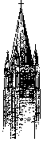
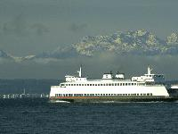

WELCOME TO THE EMERALD CITY...RAIN CITY...JET CITY...THE UPPER LEFT HAND CORNER...47.63025 N, 122.320993 W


The current time and date in Seattle is: on
The current time and date in Seattle is: on
CONTENTS: *General Info *Rain *Coffee *Beer *Music *Earthquakes/Volcanoes *Aviation *Film and Theatre *Local Characters *Neat Places *Outdoors *Festivals *Neighborhoods *Natural Medicine *Technology/Internet Resources *Politics *Sports, Weather & Traffic *Media *Food *Books *Art *Outside Seattle *Queer

 Seattle
Pictures!: beautiful shots of Seattle, its skyline and sights
Seattle
Pictures!: beautiful shots of Seattle, its skyline and sights
***************************************************************************
Monday October 21 1:37 PM EDT 1996
Seattle Tops Fortune's U.S. List Of Best Cities For Work And Family
NEW YORK, Oct. 21 /PRNewswire/ -- Seattle, which serves up a lot more
than computer software and designer coffee, is No. 1 on FORTUNE's 1996
list of Best Cities for Work and Family in the United States...
For the first time, FORTUNE has gone beyond its traditional evaluation
of cities according to business criteria to determine which cities
stand out not only as great places to work, but great places to live.
By these new measures, Seattle comes out way on top -- and not just
because it's home to Microsoft and Starbucks: it's got clean air, an
educated population and a cost of living that's considerably lower
than other major cities...
Although it rains a lot in Seattle, the climatological condition that
really matters to local residents is "days of unhealthy air," Seattle
had zero last year. The median household income is almost $47,000,
trailing only Washington, DC, and San Francisco. On the other hand,
Seattle's cost-of- living index is well below not just that of
Washington and San Francisco, but also New York, Boston, Log Angeles,
and Chicago. Seattle's people are safe and well-educated: the city
scores low in national surveys of violent and property crimes, and
high in the percentage of people with bachelor's degrees (33.9%). If
you want to do business in Seattle, the area gets high marks for its
skilled labor, its accessibility, its business infrastructure, and its
growth potential. Business space is still reasonably affordable, and
the only place where Seattle's scores are average is the commute to
work.
***************************************************************************
* More people now live in the suburbs in King County than in the
city of Seattle. The King County Annual Growth Report says 35
percent of the county population lives in suburbs, 33 percent in
the city and 32 percent in unincorporated King County.
* Where's the most honest place in the land? It may be right here in
Seattle, if an experiment conducted by the Readers Digest is to be
believed. To test people's honesty, the Digest intentionally lost
120 wallets, each containing $50 in cash, in 12 different areas of
the country, from big cities to small towns. Seattle turned out to
be the most honest place, with nine out of 10 wallets here
returned with no cash taken. Across the nation, 67 percent of the
wallets were returned.
 HistoryLink : The Online Encyclopedia of
Seattle and King County, WA History: "HistoryLink is a new historical
data base and Website devoted to chronicling the history of Seattle and
King County since the arrival of the Denny party nearly 150 years
ago...HistoryLink offers a growing collection of biographies, narratives,
profiles, images, facts and chronologies relating to King County's
history. The site includes both educational features and searchable
databases... This is the place to find historical data, stories, and
images detailing the people, events, and dreams that have formed Seattle
and King County, Washington over the past century and a half."
HistoryLink : The Online Encyclopedia of
Seattle and King County, WA History: "HistoryLink is a new historical
data base and Website devoted to chronicling the history of Seattle and
King County since the arrival of the Denny party nearly 150 years
ago...HistoryLink offers a growing collection of biographies, narratives,
profiles, images, facts and chronologies relating to King County's
history. The site includes both educational features and searchable
databases... This is the place to find historical data, stories, and
images detailing the people, events, and dreams that have formed Seattle
and King County, Washington over the past century and a half."
* City Index
a comprehensive listing of its accommodations, services and
attractions
* Map Index
An imagemap of the state which allows you to navigate to a
geographical area, and view a list of the cities or areas
located within that grid; you will be linked to an extensive
listing of accommodations, services, and attractions in that
city
* Photo Gallery of Scenic Washington and photos and text depicting
many of the recreational opportunities available in Washington
* Postcards
Washington residents and former travelers to the state share
with you their unforgettable experiences and fondest memories
* Travel Planner
Weather; By Land - a state highway map, current road conditions, and
pass reports; By Water - listings of charter and tour operators,
and state and private ferries, including the current Washington State
Ferries schedule and route map; By Air - a listing of charter
and tour operators, and major airports; By Rail - a link to
Amtrak that includes their Northwest corridor schedule;
Washington's Top Attractions - Brief descriptions of "Must
See's" around the state... and more
* Outdoor Fun
This section contains comprehensive lists and links to
recreational resources throughout Washington
* Distinctly Washington
-Washington's Wineries and Wine Country
-Native American Heritage and Casinos - a listing of Washington
-Washington Craft Breweries - statewide list by city of
brewpubs, microbreweries, and the larger craft breweries
-Special Events - a seasonal special events calendar for the
entire state with links to the hosting cities
-State and County Fairs - a list of dates and locations for
Washington's many colorful district and county fairs.
Seattle Yellow
Pages
Seattle Monk
Magazine: the Monks' off-beat take on Seattle, including the Monk Essay on
Seattle and the
Monks' Map to Seattle
 Click to
subscribe to DIBS
Click to
subscribe to DIBS
QUINTESSENTIAL SEATTLE: WHAT WE'RE KNOWN
FOR
 COFFEE!: (home of Starbucks)
COFFEE!: (home of Starbucks)
* Fast-growing Starbucks is about to grow at its administrative
headquarters at the Sodo Center south of the Kingdome.
The specialty coffee company has nearly 700 stores and plans to
add 275 in the next year.
Latte Mania:
the Monks' guide to coffee
 Seattle Bands
Music and Dance
in Seattle
Seattle Bands
Music and Dance
in Seattle
 Fun with Earthquakes!
Art with Earthquakes!
The Washington State
Library (Olympia) following the quake of 28 February 2001
Fun with Earthquakes!
Art with Earthquakes!
The Washington State
Library (Olympia) following the quake of 28 February 2001
 Seattle
Theatres
Seattle
Theatres
* Microsoft Corporation Chairman Bill Gates tops the Forbes
magazine's list of richest Americans for the second year in a row.
According to the magazine's October 16th issue, released
yesterday, Gates has a net worth of about 14.8 billion dollars.
Savage Love: Dan's
syndicated column

Recreation in
Seattle
Seattle Parks and
Gardening
Festivals
and Events...
 Seattle Neighborhoods
on the Net
Neighborhood Plans
Seattle Neighborhoods
on the Net
Neighborhood Plans
 My neighborhood:
My neighborhood:

Echoing trends in other major cities, Seattle's quality of life improved in many areas during the 1980s, according to a report released this week. The end of the '80s found Seattle better off than in the beginning of the decade according to indicators such as infant mortality, teen pregnancy, sexually transmitted diseases and unemployment. But other barometers of social health, such as poverty and violent crime, rose during a decade in which Seattle's population grew by 22,000. But as some indicators improved, others got worse. * In 1980, 13.3 percent of children in Seattle lived in poverty. By 1990, the number jumped to 15.7 percent. * Violent crime also increased between 1980 and 1990, but by 1993, had taken an overall downward turn (the study included crime figures for 1993). The murder rate dropped from 12.8 in 1980 to 10.2 per 100,000 people in 1990. But by 1993, the rate had jumped back to 12.6.

* Seattle is ranked sixth in the country on a Forbes magazine list
rating the best cities for information age businesses. Portland
ranks fifth and Salt Lake City topped the list.

* Seattle is tied with Riverside, California, for the seventh-worst
traffic in the nation, according to a study by Texas A-and-M.
Using congestion information from 1991 (the most recent available)
the study says Los Angeles has the worst traffic congestion in the
nation.
 Seattle Spectator
Sports
Seattle Spectator
Sports


Seattle Area Traffic Flow: Seattle is the 7th busiest city for traffic

Seattle
Museums
 Comments? Write me at RMIsaac@eskimo.com
Comments? Write me at RMIsaac@eskimo.com
{kind=link}
{kind=link}
{kind=link}
{kind=link}